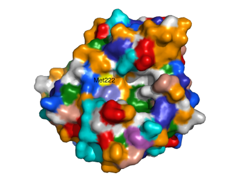
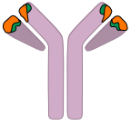
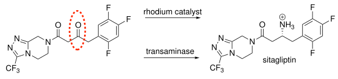
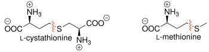

1 Setting Protein Engineering Goals
© 2023–2026 Romas Kazlauskas. All rights reserved. Last revised: March 2026.
Summary. Protein engineering is the modification of proteins to improve their properties, usually by replacing amino acid residues with other amino acids. Proteins evolved in nature for their biological role, but for other applications, they usually require improvements. The four molecular goals are improvements in stability, binding, reactivity and selectivity. Biotechnology uses engineered proteins in three main application areas: medicine, agriculture, and industry. Protein engineering in medicine has tuned the bioavailability of insulin and increased the potency and plasma half-life of monoclonal antibodies. Protein engineering in agriculture has increased the insect resistance of crops and stabilized enzymes for use as feed additives. Protein engineering for industrial applications include stabilizing detergent enzymes and engineering enzymes for pharmaceutical synthesis. Replacing chemical methods for pharmaceutical manufacture with biocatalysis usually yields a greener, more environmentally friendly process.
Learning goals
- While evolution in nature improves proteins for their natural function, application of proteins to non-natural functions requires protein engineering.
- The four molecular protein engineering goals are improvements in stability, binding, reactivity and selectivity. Identifying the goal is a critical first step of any protein engineering project.
- Achieving these molecular goals leads to a broad range of user benefits including lower costs, safer drugs, greener chemistry, improved diagnostics, or accessible healthcare.
- Engineered proteins have applications in medicine, agriculture and industry. Your home likely contains engineered proteins.
1.1 Why proteins need to be engineered
Over millennia humans have domesticated crops and animals by breeding to select for desired traits. Current wheat produces more grain than wild wheat; dogs are better companions than wolves. The molecular understanding of biology in recent decades created more powerful approaches to improve biology for human applications. These applications of biology to make useful products in medicine, agriculture and industry are collectively called biotechnology. The worldwide sales of biotechnology were ~US$160 billion in 2017.[1] The most significant application area is medicine, sometimes called red biotechnology, Figure 1.1. The next largest is agriculture, called green biotechnology and the smallest is industry, called white biotechnology.
The two primary technologies within biotechnology are genetic engineering and protein engineering. Genetic engineering changes the genetic code of an organism. The most common genetic engineering is adding a gene from one organism to another organism so that it makes a protein that it did not make previously. Such recombinant organisms gain new abilities. For example, adding the gene encoding human insulin to E. coli bacteria allowed manufacture of this essential therapeutic protein. Adding genes for proteins toxic to insects into crop plants made them resistant to insects. Combining genes to degrade different hydrocarbons into one bacteria enabled it to degrade oil spills more effectively.
Protein engineering is the modification of proteins to improve them for specific applications. Altering the gene that encodes the natural protein creates a new gene that encodes an improved variant protein. Changing the protein can improve its stability, binding, catalytic activity or even give it new functions.[2] The modifications are typically substitution of one amino acid residue with another one, but sometimes include adding or removing amino acid residues, even entire domains of a protein. For example, engineering of subtilisin, a detergent protease, replaced an easily oxidized amino acid with one less easily oxidized, thereby increasing its stability to bleach during washing,[3] Figure 1.2.

Applications that differ from the natural function usually require protein engineering. Proteins have evolved in nature for specific natural functions. When proteins are used for another function or in a different way, they will likely be not good enough. Natural selection chooses proteins that improve fitness in nature, not for various applications that humans identify. Natural proteins may be accidentally suitable for these applications, but won’t be optimized for them. For example, nature has not evolved proteins tolerant to organics solvents since no organisms live in organic solvents, but some proteins evolved to tolerate high temperatures often also tolerate organic solvents. In some cases, the different requirements are obvious. For example, an enzyme-catalyzed manufacture of a pharmaceutical intermediate may involve an unnatural substrate, organic cosolvents, elevated temperatures and high concentrations of substrates and products. In these cases, protein engineering can adjust the active site to fit the new substrate to increase reaction rate and stabilize the protein to organic solvents, elevated temperatures and high substrate and product concentrations.
In other cases, the differences between the natural protein function and application may be subtle. For example, human insulin regulates the glucose levels in the blood. Patients with type I diabetes cannot make insulin and require injections of human insulin. Although the goal is the same - to maintain glucose levels, the dosing method differs. Patients inject insulin several times per day in contrast to the pancreas continuously secreting varying amounts of insulin. This difference in dosing required engineering fast-acting variants of human insulin for injection before meals and slow-acting variants to maintain glucose levels overnight.
Evolution does not maximize the properties of a protein, but only maintains the minimum necessary. Natural selection cannot distinguish between a protein that is improved just enough so that another protein limits function and a protein that is much better. Selection favors both equally since the much better property does not contribute to fitness. A hammer made from extra-hard steel does not drive nails any better than a hammer with steel just hard enough. Since most random mutations are detrimental, a much-better protein will eventually lose its extra abilities and return to just good enough.
An example of ‘just enough’ is that most proteins are just stable enough for their natural function.[4,5] Proteins from mesophiles (organisms that grow at moderate temperatures) are not stable at high temperatures. In contrast, homologous proteins from thermophiles (organisms that grow at high temperatures) are stable a high temperatures. This stability shows that proteins from mesophiles could be more stable if needed.[6] The reason for the marginal stability is that evolution cannot select for more than the minimum needed stability.[7] An extra-stable protein in a mesophile does not give it any selective advantage, so this extra stability is slowly lost through genetic drift. One can also generalize this ‘just enough’ quality to other protein properties. Enzymes are just fast enough for their function, they bind their substrates just tightly enough and discriminate between substrates just as much as needed.
1.2 Four molecular-level protein engineering goals
To the person who does not know where he wants to go there is no favorable wind. — Seneca
The application improvements enabled by engineered proteins vary widely because they depend on the function of the protein being engineered. As described below, some improvements make vaccines more effective, others improve the synthesis of pharmaceutical, still others enable plants to grow faster under heat stress. Despite this wide range of applications, the improvements themselves stem from only four types of protein property changes: stability, binding, reactivity or selectivity, Table 1.1. Later tables in this chapter list a wide range of applications, but also classify each application according to one of these four protein property changes.
| Goal | Examples of changes |
|---|---|
| stability | tolerate heat, organic solvents, extremes of pH or other harsh conditions; tolerate storage or use for a long time at normal conditions; tolerate destabilizing substitutions; longer plasma lifetime; resistant to digestive proteases |
| binding | bind target ligand more tightly or less tightly; avoid binding to antibodies to avoid allergic reaction |
| catalytic activity | faster catalysis of existing substrates; expand catalysis to new substrates; inactivate undesired catalytic activity; enable catalysis of a new chemical reaction |
| selectivity | favor binding one ligand over another in the same solution; favor reaction of one of several competing substrates; favor formation of one of several possible products |
Stability refers to the ability of a protein to maintain its function, usually binding to a target or catalyzing a reaction. Increasing protein stability allows it to tolerate harsh conditions such as high temperatures or the presence of bleach as in the detergent protease example above. It may make the protein last longer under normal application or storage conditions. For biopharmaceuticals, stability may also refer to extending the plasma lifetime of the protein. Most proteins are rapidly removed from the blood thus limiting their therapeutic benefit. Increasing the plasma lifetime enhances the therapeutic benefit.
Binding refers to the affinity of the protein for a target molecule. Increases in the affinity of a protein for its target can lower the effective dose of a biopharmaceutical or lower the detection limit of a diagnostic test. For biopharmaceuticals, decreases in binding can also be important. Biopharmaceuticals should not bind to human antibodies to avoid causing an allergic reaction. Humanization of proteins engineers them so that they do not bind to human antibodies.
Reactivity refers to the ability of an enzyme to catalyze chemical reactions. Increases in reaction rates lowers the amount of enzyme needed for the chemical transformation. Increases in reactivity may improve reactions for existing substrates or may create new catalytic abilities by expanding reactivity to new substrates. Improvements in reactivity may enable an enzyme to catalyze new reaction types of chemical reaction, even those that enzymes in nature do not catalyze.
Selectivity refers to the relative binding or relative reactivity of two or more competing molecules in the solution. Selectivity may refer to the ability of a protein to bind one of several ligands or to catalyze the reaction of one of several substrates. It can also refer to the selective formation of one of several possible products from a single substrate. A common type of selectivity exhibited by enzymes is enantioselectivity where one enantiomer reacts faster than the other.
Identifying the protein engineering goal is a critical first step in any protein engineering project because it defines the approaches that one can use. Typically the target protein already has some desirable properties, but needs improvement on one of them. One seeks to improve this one property (stability, binding, reactivity or selectivity) while not degrading the already desirable properties. To fully define that goal one should also state the amount of change needed (e.g., a two-fold increase in stability) because it reveals how difficult the engineering will be.
Sometimes protein engineering changes several protein properties so that it can be hard to identify which property is the true protein engineering goal. The true goal is the one property that must change to improve the protein for the application. The other changes are side effects of engineering to achieve this goal.
For example, researchers wanted to engineer a protease that could degrade the protein gluten in the human digestive track so they could add it to the diet of gluten-intolerant patients.[8] The researchers started with the protease KumaWT, which favored hydrolysis after a ProArg or ProLys sequence and wanted to change it to favor hydrolysis after a ProGln sequence since gluten contains many ProGln amino acid pairs in its sequence. The engineered protein showed changes in three properties: KumaWT was more reactive toward ProGln-containing peptides, more selective for ProGln versus ProArg sequences and bound the ProGln sequence more tightly to the protease binding site.
Which of these properties was the true goal? Imagine if the catalytic activity toward the ProGln sequence increased, but there was no change in the selectivity (the ProLys sequence also reacted) and no change in the binding (the increase in reactivity was not associated with better binding). The engineered protein would still be improved because it would degrade the ProGln containing peptides. Increasing reactivity is the true goal. In contrast, imagine if selectivity improved without changing the catalytic activity. (A decrease in the activity toward the ProLys sequence could increase the selectivity for the ProGln sequence without increasing the activity toward the ProGln sequence.) No more ProGln would be cleaved than with the starting enzyme. Thus, selectivity is not the true goal and the increase is selectivity is a side effect of increased reactivity. Finally, consider the case where the binding improved, but not the selectivity or reactivity. Again, without an increase in reactivity, no more ProGln sequences would be cleaved. The authors hypothesized that the reason for the poor reactivity was that the ProGln sequence binds poorly. Thus, increasing binding was an approach to increase reactivity. If they achieved increased binding without a concomitant increase in reactivity, they would have failed and tried another approach to increase reactivity. Increased binding alone would not have yielded a better enzyme. Thus, protein engineering can simultaneously change several protein properties. The true protein engineering goal is the property that must change in order to see an improvement in the proposed application.
1.3 Application areas of engineered proteins
Examples from different application areas show how changes in protein stability, binding, reactivity and selectivity can improve proteins in widely different applications.
1.3.1 Engineering proteins for medicine
Biopharmaceuticals are biomolecules used as drugs. They can be proteins such as antibodies or enzymes; they can also be nucleic acids such as micro RNAs and even complete microbes such as attenuated live vaccines. This text considers only protein biopharmaceuticals.
The first protein biopharmaceuticals were recombinant equivalents of the natural protein where the biotechnology advantage was the ability to produce large amounts of protein. For example, blood factors that were isolated from donated blood could now be produced in cell cultures due to genetic engineering. The subsequent generations of blood factors were improved engineered variants. For example, engineering increased the potency of the blood coagulation protein, Factor VII used to treat hemophilia, so that each dose required less protein,[9] Table 1.2. The action of this blood coagulation protein depends on its binding to a membrane surface containing acidic phospholipids, which is characteristic of damaged vascular cells or of platelets that adhere to the damage as the clot forms. Mutagenesis of the membrane-binding domain of Factor VII yielded variants that bound more tightly to the membrane and therefore were more potent. The best variant contained five substitutions and was 149-296 fold better than wild-type Factor VII. Other researchers increased its potency with three amino acid substitutions that increased its catalytic activity 30-fold.[10] Proteolytic activity of Factor VII activates the next factor in the coagulation cascade.
| Category | Example of improvement | Property change |
|---|---|---|
| blood factors | more potent coagulation factor VII | increase binding to damaged cells; increased reactivity (proteolysis) |
| thrombolytics & anticoagulants | more potent and longer plasma half-life of tissue plasminogen activator | increase binding to fibrin; reduce binding to receptor that removes proteins from blood |
| hormones | fast-acting or long-lasting insulins | alter binding with other monomers |
| monoclonal antibodies | reduced immunogenicity of mouse-derived antibody | reduce binding to immune response proteins |
| growth factors | longer serum half-life of granulocyte colony-stimulating factor | increase binding to receptors that recycle proteins to blood stream |
| vaccines | less toxic pertussis (whooping cough) vaccine | inactivate reactivity that causes toxicity |
| other | less immunogenic asparaginase | reduce binding to immune response proteins |
Insulin variants engineered for altered bioavailability are even better than human insulin at controlling blood sugar levels. The engineering relied on the fact that monomeric insulin is the active form, while multimeric forms are inactive. Insulin lispro is a fast-acting insulin analog for injections before meals because it favors the monomeric form.[11] The amino acid sequence of lispro differs only in the reversal of the penultimate lysine and proline residues on the C-terminal end of the B-chain. (Insulin consists of 51 amino acids arranged as a dimer of an A-chain and a B-chain linked by disulfide bonds.) This residue change blocks the formation of insulin dimers and hexamers and increases the amount of monomeric insulin (the active form), thereby creating a faster-acting variant. In contrast, substitutions to create a slow-acting insulin analog, glargine, promote the association of the monomers into an insoluble precipitate, which then slowly releases monomeric insulin to maintain basal levels of insulin for an extended time.
An essential class of therapeutic proteins is monoclonal antibodies and monoclonal antibody drug conjugates. Common goals of antibody engineering are increasing binding to the target and minimizing immunogenicity.[12] One example of a therapeutic monoclonal antibody is trastuzumab (Herceptin®) used to treat breast cancer. This antibody interferes with the HER2 receptor (human ErbB2 receptor tyrosine kinase), which signals cell proliferation. Cancer cells, usually breast cancer, overexpress the HER2 receptor causing the cancer cells to grow uncontrollably. Interfering with the receptor stops uncontrolled growth.
Trastuzumab is a humanized version of a mouse antibody, Figure 1.3. Humanization prevents an allergic reaction to a mouse antibody. This humanization involved first, the transplantation of the complementarity-determining regions from the mouse antibody into a human IgG antibody and second, an optimization of the surrounding regions, called framework regions.[13] The transplantation of the complementarity-determining regions changed 24 amino acids in the light chain and 32 in the heavy chain. This substitution did not yield a useful antibody. The engineered version bound less tightly than the mouse antibody and did not block cancer cell proliferation upon binding. Next, an additional seven substitutions in the surrounding (framework) regions increased the binding to the target 100-fold making it three-fold tighter than the mouse antibody. This tighter binding restored the ability of the antibody to block cell proliferation. Trastuzumab was approved in the USA in 1998 to treat metastatic breast cancer.

Growth factors and cytokines, such as vascular endothelial growth factor, epidermal growth factor and granulocyte colony-stimulating factor, stimulate cell recruitment, proliferation, morphogenesis, and differentiation. Inhibitors of these growth factors act as anticancer drugs, while enhanced growth factors promote wound repair. Natural growth factors lack stability and specificity; they are prone to degradation in serum and have multiple activities. In one example of protein engineering of a cytokine, Sarkar and coworkers increased the half-life and potency of granulocyte colony-stimulating factor by modifications that increased its recycling back to the bloodstream.[14]
Cantor and coworkers engineered asparaginase, an enzyme for leukemia treatment, to be less immunogenic.[15] Treatment of childhood acute lymphoblastic leukemia involves injections of asparaginase, which cleaves asparagine to aspartate, thereby depriving the cancerous cells of asparagine. Healthy cells can make asparagine, but these cancer cells cannot. Humans do not have an asparaginase enzyme, so the treatment uses enzyme from the bacteria Escherichia coli. One limitation is that some patients’ immune systems recognize this enzyme as a non-human protein and inhibit it by binding it with an antibody or even inducing a severe allergic reaction. Cantor and coworkers identified amino acid sequences on the surface of E. coli asparaginase that are likely to be recognized by human T-cells and replaced them with non-recognized amino acid sequences. The replacements maintained the catalytic activity of the asparaginase.
Vaccines against pertussis (whooping cough) contain engineered proteins. The bacteria that causes pertussis, Bordetella pertussis, secrete pertussis toxin protein, which consists of five subunits. Immunization with the pertussis toxin or just its S1 subunit protects against disease. However, the S1 subunit is an enzyme that catalyzes the ADP-ribosylation of GTP-binding proteins. This catalytic activity is the origin of the toxicity of the pertussis toxin. Two amino acid substitutions in the S1 subunit - Glu129Gly, Arg9Lys - deactivate its catalytic activity. This inactivated version of the S1 subunit is the vaccine against pertussis.[16]
The mRNA vaccines against the SARS-CoV-2 virus encode the spike protein, which sits on the virus surface and binds to cell-surface proteins during infection. Upon binding to the target cell, the spike protein changes conformation. Researchers reasoned that the spike protein in the pre-binding conformation would make a better vaccine than the spike protein in the post-binding conformation. Binding antibodies to the spike protein before it binds to the cell could prevent infection. To stabilize the pre-binding conformation, researchers replaced six residues in the spike protein with proline.[17] Proline limits the flexibility at those sites due to its ring structure and keeps the spike protein in the pre-binding conformation. This stabilization of the protein in the pre-binding conformation improved the vaccine.
1.3.2 Engineering proteins for agriculture
Agricultural biotechnology aims mainly to improve productivity of crops and animals. Some products, like bovine somatotrophin (a growth hormone), are copies of the natural protein produced in recombinant E. coli bacteria. The pituitary gland produces small amounts of somatotrophin, but production in bacteria increases the availability and lowers the cost. Treating cows with somatotrophin increases milk production. In other cases, natural proteins are improved by engineering, Table 1.3.
| Category | Example of improvement | Property change |
|---|---|---|
| herbicide-resistant crops | glyphosate-resistant soybeans | add new reactivity (glyphosate oxidase) |
| insect-resistant crops | cotton resistant to bollworm | increase binding of Bt toxins to target proteins in insect gut |
| enhanced photosynthesis | faster growth of Arabidopsis at higher temperatures | increase stability of rubisco activase |
| modified products | algae producing an increased fraction of medium-chain fatty acids | increased reactivity toward medium-chain fatty acid precursors |
| feed additives | animal feed with higher phosphorus availability | increase stability of phytase |
Glyphosate is a broad-spectrum, systemic herbicide that acts by inhibiting the enzyme EPSP synthase in aromatic amino acid biosynthesis. Farmers can control weeds by spraying glyphosate on fields, but only if the crops are insensitive to glyphosate. Adding a glyphosate-insensitive variant of EPSP synthase from Agrobacterium sp. created the first glyphosate-resistant soybean plants.[18] The next generation of glyphosate-resistant crops contain enzymes such as oxidases or acetyl transferases, which inactivate glyphosate. Protein engineering to increase the catalytic activity of these enzymes is an important goal.[19]
Genetic modification of crops such as cotton, corn, and rice to express insecticidal crystal proteins produced by Bacillus thuringiensis protects the crops against insect pests. The toxicity of these proteins varies toward different insects, and some insects develop resistance to these toxins. Enhancing the toxicity of these proteins by increasing the their binding to target proteins in the insect gut is an essential goal in agricultural biotechnology.[20]
Heat stress hinders plant growth and lowers crop yields mainly due to reduced photosynthesis. This reduction is mainly due to an inactivation of a thermolabile ATPase, Rubisco activase, whose role is to maintain ribulose-1,5-bisphosphate carboxylase/oxygenase (rubisco) in its active state. Kurek and coworkers engineered a thermostable rubisco activase, which improved the growth of Arabidopsis plants at higher temperatures.[21] The leaf area increased approximately 20% during moderate heat stress as compared to wild-type plants.
Engineering the selectivity of fatty acid synthesis enzymes changes the composition of the lipids that accummulate in plants. Whittle and Shanklin altered the chain length selectivity of a plant fatty acid desaturase to accept a 16-carbon instead of an 18-carbon substrate.[22] Lin and Lee engineered algae to produce more medium chain length fatty acids relative to long-chain-length fatty acids for use in biodiesel production.[23]
Engineering a more stable phytase, a feed additive enzyme, increased the nutritional value of feed and reduced pollution. Phosphorus in grains and oilseeds often occurs as phytic acid (myo-inositol hexakisphosphate). Non-ruminants such as pigs and chicken digest phytic acid incompletely leading to high phosphorus in wastewater. The enzyme phytase in animal feed aids digestion of phytic acid by catalyzing its hydrolysis. Forming animal feed pellets requires pressing at high temperatures, so the phytases have been engineered for higher thermal stability to withstand this step.[24]
1.3.3 Engineering proteins for industry
Industry uses enzymes for manufacturing and similar non-natural applications, Table 1.4. The three main application areas are detergents, food and beverage, and other, which includes enzymes for the synthesis of biofuels, fine chemicals and pharmaceuticals. The advantages of using enzymes over chemical reagents or catalysts are that they are faster, greener and more selective. The primary engineering goals are stability and faster catalysis, both of which lower the cost of the enzyme.
| Category | Example of improvement | Property change |
|---|---|---|
| detergents | bleach-tolerant protease | stabilize subtilisin to oxidation |
| food and beverage | simplify starch hydrolysis to maltodextrins and glucose | stabilize \(\alpha\)-amylase to low pH |
| other (e.g., biofuels, pharmaceuticals) | engineer transaminase for manufacture of diabetes drug | increase reactivity toward target substrate; increase stability to reaction conditions |
Detergent enzymes such as proteases speed removal of food, blood and other stains on clothing. Subtilisin was the first industrial enzyme to be engineered.[3] Subtilisin tolerated hot water and surfactants, but bleach rapidly inactivated it, which limited its usefulness. Replacement of an oxidation-sensitive methionine 222 in the active site (Figure 1.2) by alanine stabilized subtilisin while maintaining high activity. The cost of these industrial proteins are typically $100/kg. In contrast, proteins for medical applications can cost \(10^5\)-fold more, $10,000/g, because their manufacture and regulatory approval are more complex.
The largest volume application in food and beverages is the conversion of cornstarch to glucose catalyzed by \(\alpha\)-amylase and glucoamylase. Glucose isomerase can isomerize the resulting glucose to high fructose corn syrup, which tastes sweeter than glucose. This process uses high temperatures to prevent microbial growth and high concentrations to minimize reactor size. Both \(\alpha\)-amylase[25] and glucose isomerase[26] have been engineered to tolerate high temperatures and high glucose concentration. Glucose isomerase has a half-life = 50-100 d at the operating temperature of 55 °C. More than 500 tons of glucose isomerase produce millions of tons of high fructose corn syrup each year, corresponding to productivities of >10,000 kg corn syrup per kg enzyme.
The use of enzymes for chemical synthesis is known as biocatalysis.[27] In pharmaceutical manufacture, the most significant application is the penicillin G amidase-catalyzed manufacture of penicillin and cephalosporin antibiotics. This process yields more than 10,000 tons of antibiotics annually with a productivity of >600 kgs product/kg enzyme.[28] These antibiotics are natural products, so they are the natural substrates for this enzymes. However, many other pharmaceuticals are not natural products, so the ability of enzymes to act on them is accidental. Engineering of enzymes to improve their ability to act on unnatural substrates and tolerate the harsh conditions of a chemical reactor is a common goal.
Engineered enzymes can also create new biochemical pathways within cells, and the whole cells can be used for synthesis. For example, Ran and Frost expanded the substrate range of an aldolase to create a new metabolic pathway to make shikimic acid for an influenza drug synthesis.[29] Keasling and coworkers combined enzymes from different organisms and biochemical pathways to create a new biochemical pathway for the synthesis of artemisinin, an anti-malarial.[30]
Green chemistry
One reason to use enzymes for manufacture of pharmaceuticals is to decrease the environmental impact of the process. The risk associated with a chemical depends both on how dangerous it is (hazard) and on one’s contact with it (exposure), Equation 1.1.
\[risk = hazard \cdot exposure \tag{1.1}\]
In the past, governments and industry focused on reducing risk by minimizing exposure. Lab coats, safety glasses, and other chemical handling rules limit the exposure of workers to hazardous chemicals. Green chemistry instead focuses on the hazard and tries to minimize it instead of exposure.[31]. Preventing problems is inevitably easier and less expensive than contending with difficulties after they occur. Green chemistry is the design of chemical products and processes that reduce or eliminate hazardous substances. Replacing chemical manufacturing steps with enzyme-catalyzed steps is an essential tool in green chemistry. Enzyme-catalyzed steps often replace hazardous solvents with water and hazardous catalysts with biodegradable enzymes. One example of greener pharmaceutical manufacture is the improved synthesis of sitagliptin, the active ingredient in an oral type 2 diabetes drug. The difficult step is the addition of the amino group with the correct orientation, Figure 1.4.

Researchers at Merck & Co. had already dramatically improved the original synthesis of sitagliptin by using a catalytic asymmetric hydrogenation with a rhodium catalyst. This improved synthesis won a Green Chemistry award in 2006. Biocatalysis further improved this synthesis. Researchers at Codexis and Merck & Co. used a transaminase-catalyzed formation of an amine, which eliminated four steps including one that required a high pressure reactor.[32] The biocatalysis approach resulted in a 10-13% higher overall yield and 19% less total waste. This improved synthesis won a second Green Chemistry award in 2010. Enabling this synthesis required extensive protein engineering of the transaminase. The starting transaminase did not react at all with the required substrate and was unstable under the reaction conditions. The engineering replaced 27 amino acids creating a highly active, highly selective and stable enzyme.
1.4 A look ahead: two main strategies of protein engineering
Protein engineering typically begins with proteins that already possess some, but not all, of the properties required for a particular application. These starting points are often natural proteins, but they may also be proteins proposed through computational design, although computational methods do not yet reliably generate proteins with all the properties needed for most applications.
The next chapter introduces the experimental methods used in protein engineering. Genetic modification of microorganisms enables the production of desired proteins in large quantities. Molecular biology techniques can then be used to alter the DNA encoding these proteins and create variants with improved properties.
Chapter 3 introduces the logic of protein engineering: protein states, defined as particular structural and functional conditions of proteins, determine protein properties, and changes in the relative Gibbs energies of these states alter those properties. Chapter 4 introduces protein structure and the molecular modeling of protein states.
The remaining chapters focus on the two principal strategies of protein engineering: rational design and directed evolution. Rational design seeks beneficial changes on the basis of protein structure, molecular mechanism, and computational modeling. Chapters 5–8 examine the rational design of protein stability, binding, reactivity, and selectivity, explaining both how these properties are measured and how they can be improved. Chapters 9–11 cover directed evolution, in which protein variants are generated, screened for improved properties, and subjected to repeated cycles of optimization.
Glossary
- Binding
- is the ability of a protein to associate with a target molecule.
- Protein engineering goal
- is the protein property that must change in order to reach the desired application improvement. Most protein engineering goals are one of these four: stability, binding, reactivity or selectivity. The specific application improvement depends on the function of the protein being improved.
- Reactivity
- is the ability of an enzyme to catalyze a chemical transformation.
- Selectivity
- is the ability of a protein to discriminate between competing molecules in solution. This discrimination can involve selectivity in binding the competing molecules or selectivity in reacting with the competing molecules. Selectivity can also refer to the favored formation of one of several competing products from a single substrate.
- Stability
- is the ability of a protein to remain folded and functional. The function can be binding to a target or catalyzing a reaction. Stability can also refer to the ability of a biopharmaceutical to persist in plasma.
References
Problems
1. The application benefits depend on the function of the target protein. Three examples of improvements achieved by engineering a more stable protein mentioned in this chapter were rubisco activase, Covid-19 vaccine and subtilisin. For each of these three target proteins: a) identify the function of this protein in the application, b) describe the type of stability that was improved by the engineering, and c) how this increased stability improved the function of the target protein in the application.
2. Proteins in nature are just good enough for the natural function. Proteins acquire point mutations through mistakes in DNA replication. Natural selection selects against deleterious mutations - those that hinder the function of a protein. Although mutations can also yield improvements in protein properties, these improvements are lost if they do not contribute to the fitness of the organism. For example, imagine a metabolic enzyme that acquires a substitution that makes it ten-fold faster. The organism does not grow ten-fold faster, but only two-fold faster because a second enzyme in the pathway now limits the rate. What will happen as these two protein accumulate additional substitutions? Keep in mind that beneficial substitutions are rare, while detrimental substitutions are common.
3. Distinguish between binding as a goal and as a hypothesis for how to increase reactivity. Tumors derived from the nervous system such as glioblastomas are more sensitive than normal tissues to l-methionine starvation. Injections of bacterial methionine-\(\gamma\)-lyase can deplete methionine and inhibit tumor growth. Researchers sought to avoid using a bacterial enzyme by engineering human cystathionine-\(\gamma\)-lyase (hCGL) to accept a new substrate, l-methionine,[33] Figure 1.5. hCGL showed no detectable activity with l-methionine. The researchers hypothesized that l-methionine does not react because it does not bind to the active site of hCGL. Three substitutions in the active site of hCGL (E59N, R119L, E339V) created variant hCGL-NLV with a more hydrophobic binding site. This variant protein improved both binding and catalysis; it could both bind l-methionine and catalyze its cleavage. Although the protein engineering changed two properties only one of these was the true goal. Identify the true goal by considering the possibility that the researchers changed only one of these properties: improved binding with no change in catalysis or improved catalysis with no change in binding. Which of these hypothetical improvements would yield an enzyme that could be useful as a cancer treatment?

4. Industrial enzymes in your kitchen Automatic dishwasher detergents contain mixtures of enzymes. Suggest three enzymes that catalyze different reactions that may be useful to include in dishwasher detergents and explain their potential role. Suggest improvements in two different types of stability that may be required for each enzyme to be useful in dishwasher detergents.
Answers
Click to show answers
1. Rubisco activase: a) Function: An enzyme that remodels Rubisco active sites to maintain CO₂ fixation in photosynthesis. b) Stability improved: Thermal stability — resistance to inactivation at elevated leaf temperatures. c) Benefit: Plants engineered with heat-stable rubisco activase maintain photosynthetic efficiency under heat stress, improving crop productivity in warmer climates. COVID-19 vaccine antigen (spike protein) a) Function: Viral surface glycoprotein used as the immunogen to elicit protective antibodies. b) Stability improved: Conformational stability — spike engineered into a prefusion-stabilized form. c) Benefit: The stabilized antigen better mimics the native viral surface structure, increasing neutralizing antibody responses and vaccine effectiveness. Subtilisin a) Function: A protease used in industrial applications, especially as an active ingredient in laundry detergents. b) Stability improved: Chemical stability — resistance to autolysis, oxidation, and inactivation by surfactants or high pH. The requirements are broader than just oxidative stability. c) Benefit: The stabilized enzyme retains activity longer in harsh detergent conditions, improving cleaning performance and extending product shelf life.
2. As mutations accumulate, most substitutions will be neutral or deleterious rather than beneficial. The initially improved enzyme will gradually lose its advantage because destabilizing or activity-reducing mutations are much more frequent than further rare beneficial ones. Since the organism’s growth is constrained by other steps in the pathway, selection pressure to maintain the extra efficiency of the faster enzyme is weak. Thus, the first enzyme will tend to drift back toward “good enough” performance, while the newly rate-limiting enzyme may now experience stronger selection for stabilizing or activity-enhancing mutations. Overall, proteins converge on the minimum performance sufficient for organismal fitness, rather than maximizing their possible catalytic or stability potential.
3. The true goal was improved catalysis, not just binding. Binding alone, without catalytic turnover, would not deplete methionine and thus would be useless as a cancer treatment. In contrast, if catalysis improved while binding affinity remained unchanged, the enzyme could still process L-methionine effectively at physiological concentrations. Therefore, binding was a hypothesis for how to enable catalysis, but the actual engineering goal was to create an enzyme that catalyzes methionine cleavage.
4. Protease (e.g., subtilisin): Cleaves peptide bonds in food residues such as egg or meat; Amylase (e.g., α-amylase): Hydrolyzes starch from foods like potatoes or pasta into soluble sugars; Lipase: Breaks down triglycerides and fat residues into glycerol and fatty acids; Cellulase: Hydrolyzes cellulose and microfibrils from plant-based food soils (e.g., vegetable fibers). Also helps prevent redeposition of small particles on dishes; Mannanase (β-mannanase): Degrades galactomannans found in thickeners like guar gum, common in sauces and ice cream residues. All enzymes require alkaline stability (stable and active at detergent pH of 9–11), oxidative stability (some contain bleach or other oxidants to remove stains), thermal stability (hot wash cycles), surfactant stability (resistance to denaturation by detergent surfactants), shelf-life stability (resistance to long storage in formulated detergent powders/liquids).